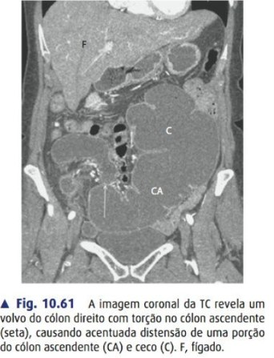

Obstrução Intestinal & Volvo
Bridas = causa #1 no delgado · neoplasia = #1 no cólon · volvo de sigmoide = detorção endoscópica; volvo de ceco = ressecção. Foco em WSES/Bologna (ASBO) e ASCRS 2021 (volvo) e nas pegadinhas das bancas do RS.
1 Quadro clínico & diagnóstico ▶
Obstrução intestinal = interrupção do trânsito por causa mecânica (barreira física) ou funcional (íleo paralítico / pseudo-obstrução, sem barreira). (o cano do intestino entope de verdade — mecânica; ou o motor para de empurrar mesmo sem entupir — funcional)
Tétrade clássica (mecânica)
- Dor abdominal em cólica (peristalse de luta contra a barreira)
- Distensão — quanto mais distal, maior
- Parada de eliminação de fezes e flatos (obstipação/constipação)
- Vômitos — precoces e biliosos (proximal) → tardios e fecaloides (distal)
Delgado × Cólon — a divisão que a banca cobra
| Delgado (ID) | Cólon (IG) | |
|---|---|---|
| Causa #1 | Aderências/bridas (pós-op) | Neoplasia (CA colorretal) |
| #2 | Hérnia encarcerada | Volvo (sigmoide > ceco) |
| #3 | Neoplasia / Crohn | Diverticulite |
| Vômito | Precoce, bilioso/fecaloide | Tardio |
| Distensão | Central, menor | Periférica, exuberante |
| RX | Alças centrais, válvulas coniventes (empilhamento de moedas) | Alças periféricas, haustrações |
(delgado = risquinhos que atravessam a alça toda como moedas empilhadas; cólon = bolsas nas bordas)
Alça fechada (closed-loop) — a mais perigosa
Obstrução em dois pontos do mesmo segmento (volvo, hérnia com anel apertado). Não há descompressão retrógrada → distensão rápida, isquemia precoce e alto risco de perfuração. (a alça vira um balão amarrado nas duas pontas — estoura fácil)
Diagnóstico por imagem
- TC de abdome com contraste EV = padrão-ouro: define nível, causa, grau (parcial × completo), zona de transição e sinais de sofrimento.
- Sinal das fezes no delgado (small-bowel feces sign) = conteúdo fecaloide na transição, sugere obstrução mais prolongada.
- RX simples (ortostase/decúbito): níveis hidroaéreos, distensão. Útil e barato, mas TC é superior.
- Volvo de sigmoide: sinal do "grão de café"/U invertido apontando para o QSD.
- Volvo de ceco: alça dilatada em "grão de café" deslocada para o QSE/epigástrio ("rim de café"), com delgado distendido.
- Enema/TC com contraste: afilamento em "bico de pássaro" (bird's beak) no ponto de torção.


2 Anatomia & vascularização ▶
Por que gira? — o pré-requisito anatômico
- Volvo = torção de uma alça em torno do seu eixo mesentérico. Precisa de segmento móvel + mesentério longo e base estreita.
- Sigmoide: mesocólon sigmoide redundante e longo, com base de fixação estreita → gira sobre o eixo dos vasos sigmoideos/hemorroidária superior.
- Ceco: fixação (fusão) incompleta do mesentério direito ao retroperitônio na embriogênese → ceco/cólon direito móvel ("cecum mobile").
Vascularização (a base que torce)
- Delgado: artéria mesentérica superior (AMS) → jejunais/ileais formando arcadas e vasa recta. Bridas comprimem a alça, não o pedículo — mas a torção sobre a AMS causa isquemia difusa.
- Ceco/cólon direito: AMS → ileocólica, cólica direita (inconstante) e ramo direito da cólica média.
- Sigmoide: artéria mesentérica inferior (AMI) → artérias sigmoideas + hemorroidária (retal) superior. Ponto de Sudeck (junção retossigmoide) e arco de Riolan / marginal de Drummond são as garantias colaterais.
3 Tratamento — clínico × cirúrgico ▶
Suporte inicial (todos) — "drip and suck"
- Jejum + SNG descompressiva (alívio de vômito e distensão). (sonda pelo nariz que aspira o que está entupido em cima)
- Reposição volêmica com cristaloide isotônico + correção de distúrbios hidroeletrolíticos (hipoK, alcalose).
- Sonda vesical para monitorar débito; ATB se estrangulamento/sepse.
Obstrução por bridas / aderências (ASBO) — WSES/Bologna
- Sem sinais de estrangulamento/peritonite e obstrução parcial → tratamento não operatório (NOM).
- Gastrografin (contraste hidrossolúvel) VO ou por SNG tem valor diagnóstico E terapêutico: contraste no cólon em até 24h prediz resolução (evita cirurgia). (se o contraste chega no cólon, o intestino vai destravar sozinho)
- NOM por até 72h; sem resolução → cirurgia. Operar após o 4º dia ↑ morbimortalidade.
- Adesiólise laparoscópica preferível se 1º episódio e/ou brida única antecipada; baixo limiar de conversão.
Volvo de SIGMOIDE — ASCRS 2021
- Estável, sem peritonite/perfuração → endoscopia (retossigmoidoscopia/colonoscopia) para avaliar viabilidade, detorcer e descomprimir. Sucesso > 90%. Deixa-se sonda retal.
- Após detorção bem-sucedida → sigmoidectomia eletiva na MESMA internação (recidiva sem cirurgia chega a 60%).
- Falha na detorção, cólon inviável ou perfurado → sigmoidectomia de urgência (Hartmann se instável/peritonite; anastomose primária ± ostomia de proteção se condições favoráveis).
- Detorção/sigmoidopexia/mesosigmoidoplastia isoladas são inferiores à colectomia p/ prevenir recidiva; fixação endoscópica (PEC) só em risco proibitivo.
Volvo de CECO — ASCRS 2021
- Detorção endoscópica NÃO recomendada (sucesso ~10–15%).
- Ressecção segmentar (hemicolectomia direita) com anastomose ileocólica é o tratamento de escolha (viável ou não).
- Cecopexia/cecostomia: só para paciente inapto à ressecção (maior recidiva e morbidade).
4 Posição & preparo ▶
- Adesiólise / delgado: decúbito dorsal horizontal, braços podendo ficar abertos; para laparoscopia, 1º trocarte por Hasson (aberto) longe de cicatrizes (risco de alça aderida à parede).
- Sigmoidectomia (volvo): posição de Lloyd-Davies / litotomia modificada (acesso perineal p/ grampeador transanal e eventual estoma), Trendelenburg + rotação lateral.
- Hemicolectomia direita (volvo ceco): decúbito dorsal; se laparoscópica, leve Trendelenburg + decúbito lateral esquerdo.
- Preparo: SNG, antibioticoprofilaxia (cefazolina + metronidazol ou cefoxitina) na indução, tricotomia, marcação de estoma pelo estomaterapeuta quando eletivo, TVP profilaxia, normotermia (ERAS/ACERTO).
5 Passo a passo — 3 cenários ▶
A) Adesiólise (bridas)
B) Sigmoidectomia por volvo
C) Hemicolectomia direita por volvo de ceco
6 Instrumentação — mão D × mão E ▶
- Tesoura de Metzenbaum (adesiólise fria)
- Bisturi elétrico / LigaSure na mobilização
- Grampeador linear (secção) e circular (anastomose)
- Porta-agulhas para suturas seromusculares
- Pinça atraumática de Babcock/DeBakey segurando a alça
- Tração-contratração da brida
- Pinça de dissecção anatômica
- Compressa para afastar e proteger alças viáveis
Pinças e clamps
- Babcock / DeBakey: preensão atraumática do intestino distendido (evita ruptura).
- Doyen (clamp intestinal não esmagador): ocluir alça antes da enterotomia.
- Kocher / Kelly: pedículos mesentéricos.
- Afastador de Balfour/Gosset em laparotomia mediana.
7 Tabela de fios — o que e quando ▶
| Momento | Fio / material | Observação |
|---|---|---|
| Ligadura de pedículo mesentérico | Poliglactina 2-0/3-0 (Vicryl) ou clip/LigaSure | Vasos sigmoideos, ileocólica |
| Anastomose manual — plano seromuscular | Polipropileno 3-0/4-0 ou seda 3-0 | Pontos separados ou contínuo |
| Anastomose manual — plano total | Poliglactina 3-0/4-0 (absorvível) | Mucosa-mucosa |
| Reparo de serosa rota | Poliglactina 4-0 seromuscular | Evita fístula tardia |
| Fechamento de aponeurose | PDS 1 / Náilon 1 (loop) | 4:1 relação fio:ferida |
| Pele | Náilon 3-0/4-0 ou grampos | Contaminado → ferida aberta 2ª intenção |
8 Complicações ▶
Precoces
- Fístula/deiscência anastomótica (maior em cólon esquerdo, urgência, contaminação).
- Isquemia/necrose não reconhecida → sepse; síndrome de reperfusão pós-detorção.
- Lesão iatrogênica (enterotomia inadvertida na adesiólise, ureter, baço na mobilização esquerda).
- Distúrbios hidroeletrolíticos e IRA por sequestro para o 3º espaço.
Tardias
- Recidiva do volvo (detorção isolada), recidiva de obstrução aderencial.
- Novas aderências (cirurgia gera aderências → ciclo).
- Estenose de anastomose; hérnia incisional; disfunção de estoma.
- Síndrome do intestino curto após ressecções extensas.
9 Temas de prova — bancas RS ▶
10 Grid de macetes & pega-ratões ▶
- "Volvo de ceco trata-se por endoscopia" → FALSO, é ressecção.
- "Após detorcer o sigmoide, alta e acompanhamento" → FALSO, opera na mesma internação.
- Confundir sinais de estrangulamento com obstrução simples → o estrangulamento contraindica NOM.
- Íleo paralítico (funcional) ≠ obstrução mecânica → sem zona de transição; tratar a causa (eletrólitos, opioides, pós-op).
+1Causas especiais de obstrução
- Volvo gástrico: organoaxial (mais comum, associado a hérnia paraesofágica) × mesenteroaxial. Tríade de Borchardt: dor epigástrica intensa, ânsia de vômito sem vômito e impossibilidade de passar SNG → descompressão endoscópica/cirurgia (redução, gastropexia, correção da hérnia); risco de estrangulamento.
- Bolo de áscaris (criança em área endêmica): RX/US com imagem em "miolo de pão"/feixe → SNG, hidratação, óleo mineral; anti-helmíntico (albendazol/piperazina) só após resolver a obstrução; cirurgia (ordenha para o cólon, enterotomia) se falha/complicação.
- Síndrome de obstrução intestinal maligna (carcinomatose): manejo paliativo — corticoide, octreotida, antiemético, gastrostomia descompressiva; stent colônico; cirurgia selecionada (expectativa >2–3 meses, ponto único).
- Íleo espástico (raro): hiperatividade sem progressão — porfiria, intoxicação por chumbo, uremia.
- Bezoar: fito (pós-gastrectomia/vagotomia, hipotireoidismo), tricobezoar (Rapunzel) → enzimático/endoscópico/cirúrgico.
- Hérnia de Petersen (pós-bypass): dor pós-prandial intermitente, sinal do redemoinho na TC → laparoscopia precoce (alça fechada).
- Criança: intussuscepção e Meckel — ver resumo Abdome Agudo: Abordagem Sindrômica.
+2Abordagem prática: toque retal, padrões & perfis
- 1º passo = toque retal (o dedo no bumbum mostra se tem cocô duro entupindo, um tumor ou se a ampola está vazia): ampola com fezes → pensar em funcional/suboclusão · ampola vazia → obstrução mecânica completa · massa → tumor · fecaloma → extração manual em bloco + clister glicerinado/lavagem.
- Suboclusão (parcial): ainda passa gás/líquido, pode ter diarreia paradoxal e ar na ampola; típica de bridas → conservador 48 h. Completa: parada total de gases e fezes, ampola vazia e sem ar; típica de tumor de cólon.
| Nível | Clínica | Distúrbio ácido-base | Causas |
|---|---|---|---|
| Alta (delgado proximal) | vômitos precoces e biliosos, depois para de evacuar; pouca distensão | alcalose metabólica hipoclorêmica e hipocalêmica (perda de HCl + aldosterona troca Na por K/H) | bridas, hérnia interna, bezoar, corpo estranho |
| Baixa (cólon) | primeiro para de evacuar, vômito tardio fecaloide; distensão importante | acidose metabólica com lactato ↑ (hipoperfusão/isquemia) | câncer de cólon, volvo, megacólon, DII |
- Perfis de prova: 50 anos, cirurgia prévia, sem emagrecimento → bridas · 70 anos, anemia e perda de peso → câncer de cólon · idoso acamado/institucionalizado, sem evacuar há 15 dias → fecaloma · Chagas + constipação crônica → volvo de sigmoide.
- Causas lembradas: enterite actínica (radioterapia prévia), estenose de Crohn (indicações cirúrgicas no Crohn: suboclusão por estenose, perfuração, fístula), gossipiboma (compressa esquecida — TC).
- Contraste por via oral/sonda: sempre hidrossolúvel (iodado), nunca bário — bário extravasado causa peritonite grave.
- Síndrome de Bouveret: íleo biliar com impactação alta (piloro/bulbo) → obstrução gástrica de saída; tratamento endoscópico/litotripsia ou gastrotomia/duodenotomia.
- Íleo biliar: em geral enterotomia proximal ao cálculo e retirada (1º tempo); colecistectomia + fechamento da fístula colecistoduodenal em 2º tempo, com paciente estável (cirurgia em 1 tempo só em selecionados).
- Íleo pós-operatório fisiológico: delgado volta em ~24 h, estômago 24–48 h, cólon 48–72 h.